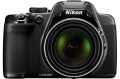

器材库 > 不可换镜头数码相机 > COOLPIX P530

规格总览
发布日期
2014-02-07
厂家推荐价格
449.95 （美元）
影像规格
影像传感器
CMOS
影像传感器尺寸
1/2.3英寸
总像素
1605万
有效像素
1676万
静态图像尺寸
16 M 4608×3456 • 8 M 3264×2448 • 4 M 2272×1704 • 2 M 1600×1200 • VGA 640×480 • 16:9 12M 4608×2592 • 16:9 2M 1920×1080 • 3:2 4608×3072 • 1:1 3456×3456
静态图像格式
JPEG
画幅比
4:3, 16:9, 1:1
短片尺寸
1920×1080（29.97fps）、1080/60i
短片格式
MOV, MPEG4-AVC/H.264
防抖系统
镜头位移
镜头和对焦
镜头结构
14片/10组
低/超低色散镜片
4片
焦距
4.3mm-180mm
等效35mm画幅焦距
24mm-1000mm
最大光圈
f/3.0-f/5.9
光学变焦
42倍
数码变焦
4倍
最近对焦距离
广角端：约50 cm 到无穷远， 远摄端：约2.0 m 到无穷远cm, 微距1cm
自动对焦系统
对比侦测AF
曝光控制
测光模式
中央重点测光, 点测光, 中央点测光
曝光模式
P（程序自动曝光）, A（光圈优先自动曝光）, S（快门速度优先自动曝光）, M（手动测光曝光）
快门速度
1/4000 - 15秒
曝光补偿
±2EV以1/3EV级调整
ISO感光度
100, 200, 400, 800, 1600, 3200, 6400
白平衡
自定义, 自动
自拍
10秒, 2秒
闪光灯
内置闪光灯
弹出式
闪光涵盖范围
广角端：0.5 - 8.0 m；远摄端：1.5 - 4.5 m
取景规格
取景器
电子取景器
取景器尺寸
0.2英寸
取景器像素
20万
LCD类型
TFT LCD
LCD尺寸
3.0英寸
LCD像素
92万
视野率
100%
文件输入/输出
内置存储容量
56 MB
存储卡
SD/SDHC, SDXC
数据接口
高速USB, Mini USB
视频/音频接口
HDMI Mini 输出
无线功能
Wi-Fi
电源
电池
一块锂离子可充电电池EN-EL5
外观
颜色
黑色
尺寸
122.8×84.1×98.2mm
重量
494g
该产品暂无存档的网友点评